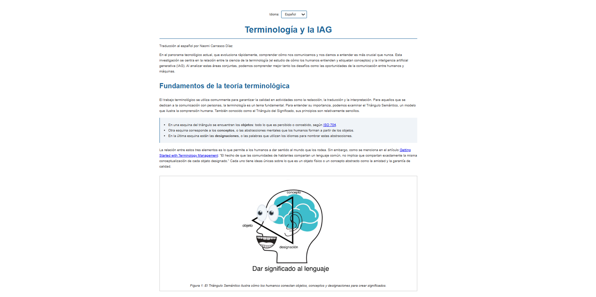
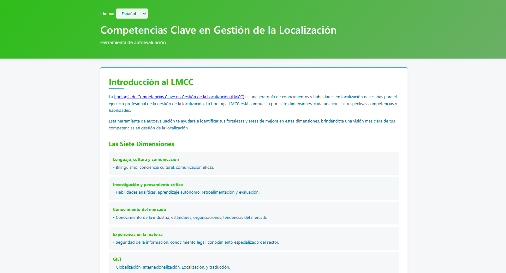
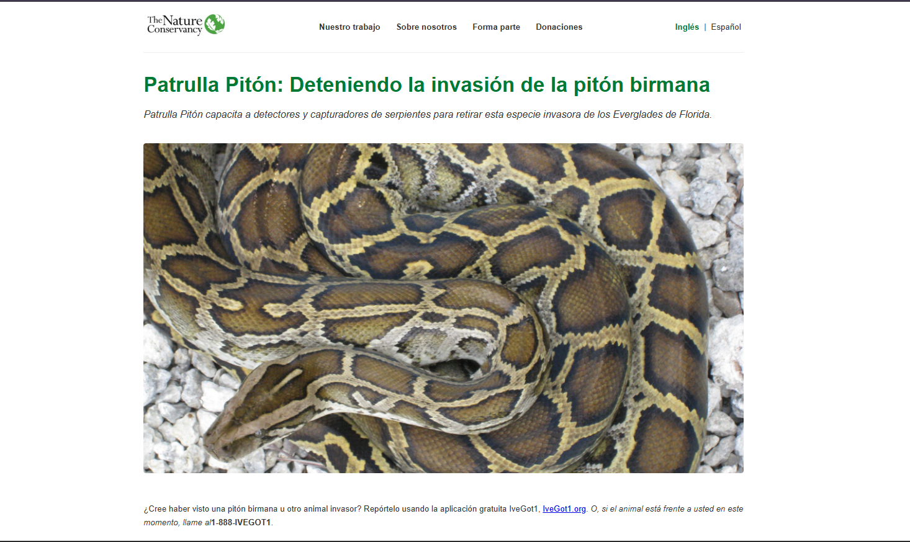
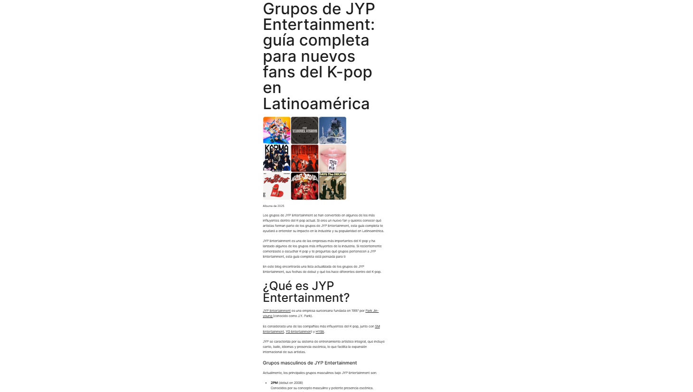
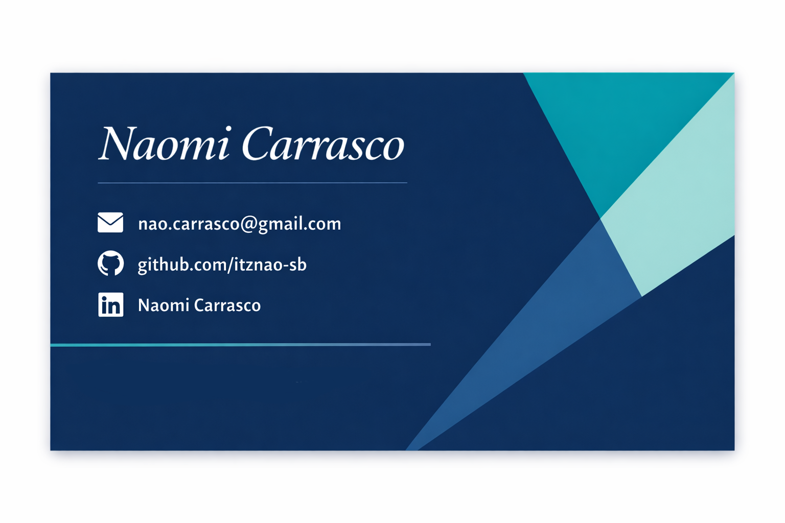

¡Hola! Me llamo Naomi, soy estudiante de traducción con interés en la traducción audiovisual, especialmente en el doblaje y el subtitulaje. Trabajo con inglés y español y disfruto adaptar contenido para distintos públicos y contextos culturales. También me gusta trabajar con HTML y desarrollar pequeños proyectos web que combinan lenguaje y tecnología. Mis proyectos académicos se enfocan en la localización web, las estrategias de traducción y la comunicación digital.
¡Siéntete libre de explorar mi portfolio y los ejemplos de mi trabajo y ponte en contacto si deseas colaborar!

Este proyecto consistió en la localización de una página web académica sobre terminología e IA generativa al español de México. El trabajo incluyó la traducción de terminología especializada, la adaptación de elementos HTML y la localización de elementos de interfaz y texto alternativo.
Ver proyecto
Este proyecto consistió en la localización al español de México de una herramienta interactiva de autoevaluación basada en las Competencias Clave en Gestión de la Localización (LMCC). El trabajo incluyó la adaptación del texto de la interfaz, elementos HTML y navegación para usuarios hispanohablantes.
Ver proyecto
Este proyecto consistió en la traducción y localización de una página web de concientización ambiental sobre pitones invasoras utilizando la herramienta TAC OmegaT. El trabajo incluyó la traducción de contenido HTML, metadatos, texto alternativo de imágenes y la adaptación de enlaces externos y elementos de interfaz para una audiencia hispanohablante en el sur de Florida.
Ver proyecto
Este proyecto consistió en crear un blog en WordPress y redactar una entrada optimizada para motores de búsqueda. El trabajo incluyó investigación de palabras clave, análisis SEO con herramientas externas y la estructuración del contenido con encabezados, metadatos, imágenes y enlaces para mejorar su visibilidad.
Ver proyecto
¿Te interesa trabajar en conjunto? ¡Conectemos!